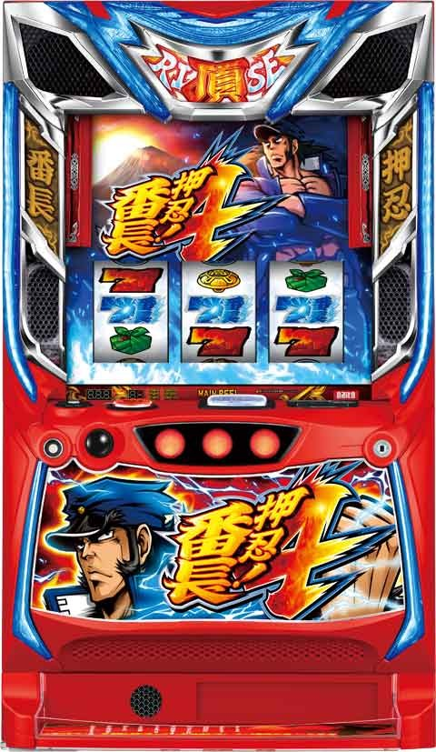

L押忍！番長４

【天井情報】
699G+α ボーナス当選
特訓天井 最大249G 特訓突入
リセット時は押忍モードから 最大149G 特訓突入
【救済ポイント天井】
最大9ptで次のボーナスが次次回予告発生
リセット時は最大5 or 6pt？
【リセット判別】
ガックン無し
朝イチ149G+αを超えて特訓なら据置
据置でも朝イチ赤オーラ纏ってる
【有利区間について】(公式発表)
有利切れ条件
・エンディング終了時
・頂RISE終了時に差枚がプラスで頂きRISE UP突入した時
・差枚が+1700枚を超えて頂RISE終了した時
有利区間リセットで頂RISE UPに突入。(突入＝有利区間リセットではない)
また、差枚+900枚以上の状況かつ引戻しモード以外の当選で頂きRISE UPに突入
狙い目
【リセット狙い】
ボーナス間
0スルー(天井到達時はATまで)
積極派 400Gから
慎重派 430Gから
1スルー
前回天井 0Gから ATまで
前回非天井
押忍モード 30Gから特訓
押忍モード以外 380Gから
2スルー以降 200Gから
【条件&スルー別ボーナス間天井狙い】
※ 救済ポイントがあり最大9スルーでAT当選。
ボーナス間天井(履歴700G以上)があるとボーダー下げられる。
レギュラーの方がポイント獲得しやすいため、レギュラー回数も見た方が良さそう？
ボーナス間狙い後にATまでに該当する場合はATまで続行。
①ボーナス間天井なし
0から2スルー 480G
3スルー 300G
4スルー
押忍モード 30Gから特訓
押忍モード以外 200G
5スルー以降 0Gから ATまで
②ボーナス間天井あり
1から2スルー 300Gから
3スルー
積極派 0GからATまで
慎重派 200GからATまで
4スルー以降 0Gから ATまで
③ボーナス間天井あり(2回)
2スルー
積極派 0GからATまで
慎重派 200Gから
3スルー以降 0GからATまで
【救済ポイント狙い(スルー天井狙い)】
仮定
1スル 1pt
バケ +0.5pt 0-1pt
600-700当選 +0.5pt 0-1pt
700超え +1から+1.5pt
※ボーナス間天井到達がポイントの恩恵が大きい。バケや600-700ハマりも少し恩恵あり。
※バケは獲得枚数50枚以下を想定
※押忍モード抜け直後から打ち出し時(例えば特訓間0Gボーナス間100G前後)は、一旦機械割が下がる。その場合は朝イチ以外は1pt、設定変更後は0.5ptボーダーを上げる。
※打てるラインは106-107%想定。
①朝イチ以外 9ptMAX
打てるライン 原則4.5 or 5 pt
5スルー 不問 内部5pt
4スルー
バケ2回 内部5pt
バケ1回600-700 1回 内部5pt
700超え1回 内部5-5.5pt
3スルー
バケ3回 内部4.5pt
バケ2回600-700 1回 内部4.5pt
バケ1回700超え1回 内部4.5-5.0
pt
2スルー
700超え2回 内部4-5pt
②設定変更後 5 or 6pt MAX
打てるライン 原則2pt
3スルー 不問
2スルー
バケ、700超え0回 内部2pt
1スルー
700超え1回 内部2-2.5pt
※朝イチに関しては、おは天すれば1スルー700超え状態になるので、300ハマっていれば打って、天井行けばラッシュまでといった感じで打てる。300からボナ間天井狙いは機械割100%前後。300もハマっていれば+0.5ptくらいの価値がある。
※同じ要領で朝イチ以外でも3.5pt以上の場面で350ハマってれば(朝イチ以外のボナ間は辛め)ボーナス当選まで打って押し引きが可能。
※押忍モード単体で機械割100%超えるため、後1ptあれば打てる様なケースで押忍モードだけ消化もあり。
※打てるライン前後の細かい狙い目は、有料情報の購入が望ましい。
・なるちゃん(オススメ)
・狐チャンネル
・すろらぼ
※手堅く行く場合は、朝イチ以外6pt、朝イチは2.5pt。
※AT突入すると救済ポイントはリセットされる
【差枚別有利区間切れ狙い】
有利切れのタイミングは有利切れ条件を参照。
1700枚以上で即ライザップ？
AT終了時点の差枚基準
1300枚以上 当選まで
1000枚以上 引戻しまで
800枚以上 引戻しまで
AT終了時点でボーナス間ハマっていた場合
1000枚以上 330Gから
500枚以上 430Gから
【頂RISE一撃1550枚以上後狙い】
現状狙えるか不明
頂RISE一撃1550枚以上後はAT終了後、約200Gの間に引き戻し以外での対決勝利で頂RISE UPの突入抽選。
一撃1550枚以上後は実ゲーム160G以内に特訓前兆行かなかったらやめ？
※設定差ある様だと狙えない可能性あり
※引き戻し絡んだ場合はどうなるか不明
【ボーダー調整要因】
①有利区間差枚
-500枚以上 -10G
-1000枚以上 +0G
-2000枚以上 +20G
-2000枚未満 +30G
②レギュラー回数
0回 +30G
1回 +0G
2回 -20G
3回 -40G
③AT間ハマり(2スルー 以降)
AT間ハマり中のボーナス確率が、
平均1/500未満 -20G
平均1/400〜1/500 +0G
平均1/400以上 +30G
【特訓間狙い】
特訓間 190G
押忍モード時 50G
(差枚+700枚以上かつライザップ未当選時は0Gから)
前回200G超えの特訓失敗時は110G
※G数は液晶左側に表示。上が特訓間、下がボーナス間。
【モード示唆狙い】
轟のオーラ
・赤 押忍モード or 天国
→ボーナス、AT後はデフォルト？
・青 青BB or AT濃厚
→ボーナス当選まで
ステチェン
・シルエット デフォルト
・轟 通常B以上
→特訓間110Gから
・轟パンチ 天国 or 本前兆
→ボーナス当選まで
ボナ後ステージ
・河川敷 デフォルト
・夕方 天国or AT濃厚
→ボーナス当選まで
・夜 AT濃厚
→AT当選まで
【宗次郎ポイント狙い】
保有量示唆で掃除ロボなら解放まで。
掃除機は単体で打てるか不明。
やめ時
ボーナス後はステチェン、ステージを確認してやめ。特訓突入時は特訓消化してやめ。救済ポイント狙い時はAT突入まで。
AT後はボーナス間440G以上ハマってればボーナス当選まで。また、有利切れ狙い等出来るなら続行。それ以外はやめ。
AT後、宗次郎pt示唆で掃除機以上なら引き戻し確認。
その他
・履歴の見方
{kind=link}
・モード別特徴、特訓分布
{kind=link}
{kind=link}
・宗次郎ポイント保有量示唆
{kind=link}
参考元
基本情報
- メーカー: 大都技研
- 機械割: 97.8% 〜 113.1%
- 導入開始日: 2024年04月22日（月）
- ゲーム性概要: 通常時はレア役とゲーム数消化で当選する対決に勝利することで、ボーナスに当選。ボーナス中の抽選でAT突入を目指すゲーム性だ。 AT「頂ライズ」は純増約2.7枚/G、初期ゲーム数50Gのゲーム数上乗せ型。『番長3』と同様にベル回数やレア役で対決を抽選し、勝利すればゲーム数上乗せや特化ゾーンを獲得する。 エンディング後などに突入する「頂ライズアップ」はAT当選確定となるだけでなく、消化中に一撃頂上ジャッジメント（成功でATが豪頂閣スタート）や「愛の教育的指導」当選の可能性もあり。 もちろん、「超番長ボーナス」や「絶頂対決」といった超強力な出玉トリガーも搭載されているぞ。


打ち方
打ち方・小役
打ち方（小役狙い）
「最初に狙う絵柄」

左リール上段付近にBARを狙う。
「チェリー停止時」
成立役…弱チェリー／強チェリー

「BAR下段停止時」
成立役…ハズレ／ベル／リプレイ／チャンス目

「弁当箱停止時」
成立役…弁当箱／チャンス目

中リールにBARを目安に弁当箱を狙う。右リールはフリー打ちでOKだ。
「レア役の停止例」

変則押しはNG

通常時、押し順ナビなし時は左リール第1停止での消化を推奨する。
解析情報通常時
小役関連
レア役の抽選内容
おもに弱レア役で内部状態の昇格を抽選、強レア役は対決濃厚だ。
レア役の抽選内容
| 役 | 内容 |
|---|---|
| 弱チェリー／弁当箱 | 内部状態昇格抽選 |
| 弱チェリー／弁当箱 | 対決抽選 |
| 弱チェリー／弁当箱 | 弁当箱契機の対決は勝利濃厚 |
| チャンス目／強チェリー | 対決以上濃厚 |
チャンスベル

ベル揃い時に中リールにオレンジのベルが止まるとチャンスベル。対決中であれば勝利抽選優遇、AT中はベルカウンターが＋2されるなど、通常のベル揃いに比べて強い抽選がおこなわれる。
※左リール第1停止時はチャンスベルなし
小役確率
| 役 | 確率 |
|---|---|
| 押し順ベル | 1/5.0 |
| 押し順チャンスベル | 1/11.7 |
| 弱チェリー | 1/86.6 |
| 弁当箱 | 1/118.1 |
| チャンス目 | 1/368.2 |
| 強チェリー | 1/555.4 |
共通ベルの判別法
| 状態 | 判別法 |
|---|---|
| 通常時 | 左第1停止で揃うベル |
| AT中 | ナビなしベル |
共通ベル成立時は、1/6で12枚、5/6で1枚を獲得する。
「AT中の押し順ベル」

AT中の押し順ベル成立時は必ずナビが発生。第1停止のみのナビの場合、押し順正解で12枚ベル、不正解時は1枚ベルが揃う。エンブレムモード中は7枚役にも必ずナビが発生かつ、第1停止のみのナビがなくなるため、純増がアップする。
内部状態関連
内部状態概要

上位の状態ほどレア役で対決（特訓）に当選しやすく、宗次郎ポイントの獲得率も優遇。弱チェリーや弁当箱で状態の昇格を抽選していて、夕方や夜へ移行すればチャンスだ。
モード
モード概要
通常時はゲーム数消化とレア役で特訓を目指すゲーム性で、滞在モードに応じてチャンスとなるゲーム数や天井が変化。特訓に当選し、ボーナス非当選だった場合に次のモードへ移行する。
モードごとの特徴と特訓発展までの天井ゲーム数
| モード | 特徴 | 特訓天井 |
|---|---|---|
| 押忍モード | 設定変更時・ボーナス終了時に移行 ボーナス期待度約50% | 149G |
| 通常A | 基本となるモード 200G以降の特訓失敗時は通常B以上へ | 249G |
| 通常B | 次回通常B or チャンス | 199G |
| チャンス | 期待度が高いモード | 149G |
| AT引き戻し | AT終了後に必ず移行 対決勝利でATを引き戻し | 99G |
| 天国 | 49G以内にボーナス濃厚 | 49G （ボーナス） |
※AT引き戻しモード中にボーナス間天井を迎えた場合、ボーナス＋ATが確定する。
モードごとのゾーン
| ゲーム数 | 押忍モード | 通常A | 通常B |
|---|---|---|---|
| 1～49G | △ | × | × |
| 50～99G | 〇 | × | △ |
| 100～149G | 天井 （特訓） | 〇 | × |
| 150～199G | × | × | 天井 （特訓） |
| 200～249G | × | 天井 （特訓） | × |
| ゲーム数 | チャンス | AT引き戻し | 天国 |
| 1～49G | 〇 | 〇 | 天井 （ボーナス） |
| 50～99G | 〇 | 天井 （特訓） | × |
| 100～149G | 天井 （特訓） | × | × |
| 150～199G | × | × | × |
| 200～249G | × | × | × |
※特訓発展期待度…×＜△＜◯
［ゲーム数カウンター］

上段の大きな数字が現在消化しているモードのゲーム数。下段の小さい数字でボーナス or AT終了からのトータルゲーム数を表示している。
［轟のオーラ］

轟が赤いオーラをまとっていれば押忍モード or 天国濃厚。設定変更時とボーナス終了後は押忍モードに滞在するので初当り期待度が高い。
特訓
特訓概要

シリーズおなじみの前兆ステージ。鉄塊落下など、さまざまな演出で期待度を示唆する。消化中のレア役では、対戦相手の弱体化を抽選。弱体化対決はチャンスベル以上で勝利濃厚かつ、押し順ベルにナビが発生するので勝利期待度が高い。
宗次郎ポイント／宗次郎特訓
宗次郎ポイント

特訓後の対決敗北後などに獲得するポイントで、規定ポイントを獲得すると次の特訓が宗次郎特訓に昇格する。
宗次郎ポイント性能
| 項目 | 内容 |
|---|---|
| ポイント獲得契機 | ベル・レア役成立時 |
| ポイント獲得契機 | 特訓後の対決敗北時 |
| 50ポイント到達時 | 次の特訓が宗次郎特訓に昇格 |
| ポイントリセット契機 | 通常時の宗次郎特訓突入時 |
| ポイントリセット契機 | 有利区間リセット時 |
ポイント獲得契機・獲得量
| 契機 | 昼ステージ | 夕方ステージ |
|---|---|---|
| 特訓後の対決敗北 | 5～50pt | |
| ベル入賞時 | 1～10pt | 2pt以上 |
| レア役成立時 | 2～10pt | 5pt以上に期待 |
宗次郎特訓


規定宗次郎ポイント到達時に突入する上位の特訓。全役でライバルの弱体化を抽選するほか、対決中のベル成立時に必ず押し順ナビが発生するため勝利期待度が高い。
宗次郎ポイント性能
| 項目 | 内容 |
|---|---|
| ポイント獲得契機 | ベル・レア役成立時の抽選 |
| ポイント獲得契機 | 特訓後の対決敗北時 |
| 規定ポイント到達時 | 次の特訓が宗次郎特訓に昇格 |
| ポイントリセット契機 | 通常時の宗次郎特訓突入時 |
| ポイントリセット契機 | 有利区間リセット時 |
ボーナス・AT当選、REG後の宗次郎特訓では宗次郎ポイントがリセットされないので、ポイントMAXが近い状態でAT後の引き戻しモードを迎えた場合はアツい（対決勝利でAT引き戻し）。
対決
対決概要

ボーナス当選のメイン契機。『番長3』の対決と似ていて、対決中のベル揃いやレア役で勝利を抽選する。敗北しても特訓移行の可能性あり！
対決の強弱
| ライバル | 弱対決 | 中対決 | 強対決 |
|---|---|---|---|
| ノリオ | エアホッケー | あっちむいてホイ | 紙相撲 |
| サキ | 紙相撲 | エアホッケー | ドッジボール |
| チャッピー | 椅子取り | ババ抜き | エアホッケー |
| マダラ | あっちむいてホイ | 椅子取り | ババ抜き |
| 巌 | － | ドッジボール | あっちむいてホイ |
成立役ごとの勝利期待度序列
| 役 | 序列 |
|---|---|
| その他 | 低 |
| ベル揃い | ↓ |
| チャンスベル／弱チェリー | ↓ |
| 弁当箱 | ↓ |
| 強チェリー／チャンス目 | 高 |
［小役入賞時のエフェクト］

エフェクトの色が赤なら勝利の大チャンス！
「弱体化対決」

対決対峙画面でライバルが驚く・気弱そうな表情を浮かべていると弱体化対決で、チャンスベル以上を引けばその時点で勝利濃厚となる。
「対峙画面での小役成立時」

対決対峙画面でベル・レア役を引くと、リール上に擬似遊技でリプ・リプ・ベルが停止（番長3のMBの出目）。対峙画面で引いた小役が対決1Gに持ち越されるためチャンスだ。
確定対決当選率
滞在モードに応じて、対決当選時の確定対決の当選率が変化する。
［REG後の特訓契機］確定対決当選率
※特訓・宗次郎特訓どちらを経由した場合も当選率は共通
確定対決当選時の対決種別割合
| 種別 | 割合 |
|---|---|
| 弱対決 | 25.1% |
| 中対決 | 45.2% |
| 強対決or巌対決 | 29.7% |
天井
救済ポイント性能
| 項目 | 内容 |
|---|---|
| 獲得契機 | AT間のボーナス回数による抽選 （AT間10回目のボーナスは救済ポイントMAX） |
| 獲得契機 | ボーナス間ハマリゲーム数による抽選 |
| ポイントMAXの恩恵 | ボーナス当選時に次次回予告発生 （AT確定） |
| ポイントリセット契機 | AT当選 （契機不問） |
演出動画
ロングフリーズ
超番長ボーナス確定の激アツ演出。期待枚数は約3500枚と超強力だ。
解析情報ボーナス時
番長ボーナス（初当り）
番長ボーナス概要

30G＋αの擬似ボーナスで、消化中は成立役に応じて7揃い高確を抽選。7揃い高確中に7が揃えばAT当選が確定する。7揃い高確中はボーナスゲーム数の減算がストップ、選択した告知タイプによって演出が変化する。
番長ボーナス性能
| 項目 | 赤7ボーナス | 青7ボーナス |
|---|---|---|
| 継続ゲーム数 | 30G＋α | |
| 1Gあたりの純増 | 約2.7枚 | |
| 消化中の抽選 | まずは7揃い高確を抽選 | |
| 消化中の抽選 | 7揃い高確中に7揃いを抽選 （強レア役は7揃い濃厚） | |
| 7揃い高確ゲーム数 | 3G | 5G |
| AT期待度 | 約42% | 約82% |
7揃い時の恩恵
| 7揃い | 通常時 | AT中 |
|---|---|---|
| 赤7揃い | AT当選 | 勝利確定の対決ストック |
| 青7揃い | 轟雷光確定対決ストック＋次回天国 |
「轟：チャンス告知」

7揃い高確最終ゲームのパンダジャッジで7揃いを告知。
「薫：完全告知」

（超）どんぱっぱタイム中に告知発生で7揃い確定。
「操：最終告知」

最終ゲームのアンコールーレットで7揃いの当否を告知。操ボーナスを消化中は7揃い高確へ移行しても告知されず、見た目上はそのままボーナスが進んでいく。もちろん、内部的にはボーナスゲーム数の減算がストップしているため、ボーナスゲーム数が0になったタイミングで??表示になり、内部的に当選していた7揃い高確のゲーム数分、ボーナスを消化できる（赤7ボーナスで??が3G続いた場合は7揃い高確に1回当選）。
［残り??表示］

［アンコールーレット］


頂RISEのロゴが止まればAT確定。虹の頂RISEは青7揃いを含む2回以上、7揃いに当選していたことを示唆している。
7揃い高確当選率＆7揃い当選率
ベルとレア役で7揃い高確移行を抽選。7揃い高確中は全役で7揃いを抽選する。7揃い高確に当選したときの一部で、7揃いもすでに確定しているケースがある。
7揃い高確当選率
| 役 | 赤7ボーナス中 | 青7ボーナス中 |
|---|---|---|
| ベル | 10.16% | 20.31% |
| チャンスベル | 33.20% | 66.80% |
| 弱レア役 | 33.20% | 66.80% |
| 強レア役 | 100% | 100% |
7揃い高確当選時・7揃い当選率 赤7ボーナス中
| 7揃い高確当選契機 | 赤7揃い | 青7揃い |
|---|---|---|
| チャンスベル | 0.39% | 0.39% |
| 弱チェリー | 0.39% | 0.39% |
| 弁当箱 | ー | 0.78% |
| 強レア役 | 4.69% | 0.39% |
青7ボーナス中
| 7揃い高確当選契機 | 赤7揃い | 青7揃い |
|---|---|---|
| チャンスベル | 4.69% | 0.39% |
| 弱チェリー | 4.69% | 0.39% |
| 弁当箱 | ー | 1.56% |
| 強レア役 | 14.06% | 1.56% |
7揃い高確中・7揃い当選率
| 役 | 7揃い権利獲得前 | 7揃い権利獲得後 |
|---|---|---|
| 下記以外 | 0.39% | 0.39% |
| ベル | 10.16% | 5.08% |
| チャンスベル | 33.20% | 10.16% |
| 弱レア役 | 40.23% | 12.50% |
| 強レア役 | 100% | 100% |
REG（初当り）
REG概要

全役でキャラの追加を抽選し、キャラが増えるほどAT期待度がアップ（AT中はゲーム数上乗せ期待度アップ）。ボーナス終了の次ゲームで発生する漢気ルーレットでその後の展開を告知する。
REG性能
| 項目 | 内容 |
|---|---|
| 継続ゲーム数 | 15G |
| 1Gあたりの純増 | 約2.7枚 |
| 消化中の抽選 | 全役でキャラ追加を抽選し キャラが増えるほど期待度がアップする |
キャラの登場順番
| キャラ | 順番 |
|---|---|
| 舎弟 | 1人目 |
| 牡丹 | 2人目 |
| 薫 | 3人目 |
| マチ子 | 4人目 |
| 操 | 5人目（AT濃厚） |
| 宗次郎 | 6人目（AT濃厚＋次回天国濃厚） |
※AT中はキャラが増えるほど上乗せゲーム数に期待
［漢気ルーレット］

豪頂閣移行でAT＋天国確定!?
REG中の抽選
通常時に当選したREG中は、毎ゲームの成立役を参照してキャラの追加を抽選。終了後の漢気ルーレット時のキャラと成立役で移行先を決定する。AT濃厚の宗次郎出現後は、確定対決ストックのチャンスとなる。
REG中のキャラ追加抽選当選率 現在のキャラ：轟
| 役 | 非当選 | 1人追加 | 2人追加 |
|---|---|---|---|
| 下記以外 | 99.6% | 0.4% | ー |
| ベル | ー | 100% | ー |
| チャンスベル | ー | 99.6% | 0.4% |
| 弱レア役 | ー | 93.8% | 6.3% |
| 強レア役 | ー | ー | 100% |
現在のキャラ：舎弟
| 役 | 非当選 | 1人追加 | 2人追加 |
|---|---|---|---|
| 下記以外 | 99.6% | 0.4% | ー |
| ベル | 75.0% | 25.0% | ー |
| チャンスベル | 50.0% | 49.6% | 0.4% |
| 弱レア役 | ー | 96.9% | 3.1% |
| 強レア役 | ー | ー | 100% |
現在のキャラ：牡丹
| 役 | 非当選 | 1人追加 | 2人追加 |
|---|---|---|---|
| 下記以外 | 99.6% | 0.4% | ー |
| ベル | 87.5% | 12.5% | ー |
| チャンスベル | 66.8% | 32.8% | 0.4% |
| 弱レア役 | 25.0% | 73.4% | 1.6% |
| 強レア役 | ー | ー | 100% |
現在のキャラ：薫
| 役 | 非当選 | 1人追加 | 2人追加 |
|---|---|---|---|
| 下記以外 | 99.6% | 0.4% | ー |
| ベル | 93.8% | 6.3% | ー |
| チャンスベル | 75.0% | 24.6% | 0.4% |
| 弱レア役 | 50.0% | 48.4% | 1.6% |
| 強レア役 | ー | 75.0% | 25.0% |
現在のキャラ：マチ子
| 役 | 非当選 | 1人追加 | 2人追加 |
|---|---|---|---|
| 下記以外 | 100% | ー | ー |
| ベル | 98.4% | 1.6% | ー |
| チャンスベル | 87.5% | 12.5% | ー |
| 弱レア役 | 75.0% | 25.0% | ー |
| 強レア役 | ー | 100% | ー |
現在のキャラ：操
| 役 | 非当選 | 1人追加 | 2人追加 |
|---|---|---|---|
| 下記以外 | 100% | ー | ー |
| ベル | 99.6% | 0.4% | ー |
| チャンスベル | 87.5% | 12.5% | ー |
| 弱レア役 | 75.0% | 25.0% | ー |
| 強レア役 | ー | 100% | ー |
宗次郎到達後・確定対決ストック当選率
| 役 | 当選率 |
|---|---|
| 下記以外 | 5.1% |
| ベル | 25.0% |
| チャンスベル | 50.0% |
| 弱レア役 | 50.0% |
| 強レア役 | 100% |
最終的なキャラと成立役別 漢気ルーレットでの移行先振り分け 現在のキャラ：轟
| 役 | 薫特訓 | 宗次郎特訓 | 頂ライズ | |
|---|---|---|---|---|
| 下記以外 | 96.5% | 3.1% | 0.4% | |
| チャンスベル | 74.2% | 25.0% | 0.8% | |
| 弱レア役 | ー | 96.9% | 3.1% | |
| 強レア役 | ー | ー | 100% | |
| 役 | 頂ライズ＋天国 | 頂ライズ＋天国＋豪頂閣 | ||
| 下記以外 | ー | ー | ||
| チャンスベル | ー | ー | ||
| 弱レア役 | ー | ー | ||
| 強レア役 | ー | ー |
現在のキャラ：舎弟
| 役 | 薫特訓 | 宗次郎特訓 | 頂ライズ | |
|---|---|---|---|---|
| 下記以外 | 93.4% | 6.3% | 0.4% | |
| チャンスベル | 65.2% | 33.2% | 1.6% | |
| 弱レア役 | ー | 93.8% | 6.3% | |
| 強レア役 | ー | ー | 100% | |
| 役 | 頂ライズ＋天国 | 頂ライズ＋天国＋豪頂閣 | ||
| 下記以外 | ー | ー | ||
| チャンスベル | ー | ー | ||
| 弱レア役 | ー | ー | ||
| 強レア役 | ー | ー |
現在のキャラ：牡丹
| 役 | 薫特訓 | 宗次郎特訓 | 頂ライズ | |
|---|---|---|---|---|
| 下記以外 | 87.1% | 12.5% | 0.4% | |
| チャンスベル | 56.6% | 40.2% | 3.1% | |
| 弱レア役 | ー | 87.5% | 12.5% | |
| 強レア役 | ー | ー | 100% | |
| 役 | 頂ライズ＋天国 | 頂ライズ＋天国＋豪頂閣 | ||
| 下記以外 | ー | ー | ||
| チャンスベル | ー | ー | ||
| 弱レア役 | ー | ー | ||
| 強レア役 | ー | ー |
現在のキャラ：薫
| 役 | 薫特訓 | 宗次郎特訓 | 頂ライズ | |
|---|---|---|---|---|
| 下記以外 | 74.6% | 25.0% | 0.4% | |
| チャンスベル | ー | 93.8% | 6.3% | |
| 弱レア役 | ー | 75.0% | 25.0% | |
| 強レア役 | ー | ー | 100% | |
| 役 | 頂ライズ＋天国 | 頂ライズ＋天国＋豪頂閣 | ||
| 下記以外 | ー | ー | ||
| チャンスベル | ー | ー | ||
| 弱レア役 | ー | ー | ||
| 強レア役 | ー | ー |
現在のキャラ：マチ子
| 役 | 薫特訓 | 宗次郎特訓 | 頂ライズ | |
|---|---|---|---|---|
| 下記以外 | ー | 98.4% | 1.6% | |
| チャンスベル | ー | 75.0% | 25.0% | |
| 弱レア役 | ー | 50.0% | 50.0% | |
| 強レア役 | ー | ー | 75.0% | |
| 役 | 頂ライズ＋天国 | 頂ライズ＋天国＋豪頂閣 | ||
| 下記以外 | ー | ー | ||
| チャンスベル | ー | ー | ||
| 弱レア役 | ー | ー | ||
| 強レア役 | 25.0% | ー |
現在のキャラ：操
| 役 | 薫特訓 | 宗次郎特訓 | 頂ライズ | |
|---|---|---|---|---|
| 下記以外 | ー | ー | 99.2% | |
| チャンスベル | ー | ー | 96.1% | |
| 弱レア役 | ー | ー | 92.2% | |
| 強レア役 | ー | ー | ー | |
| 役 | 頂ライズ＋天国 | 頂ライズ＋天国＋豪頂閣 | ||
| 下記以外 | 0.4% | 0.4% | ||
| チャンスベル | 3.1% | 0.8% | ||
| 弱レア役 | 6.3% | 1.6% | ||
| 強レア役 | 75.0% | 25.0% |
現在のキャラ：宗次郎
| 役 | 薫特訓 | 宗次郎特訓 | 頂ライズ | |
|---|---|---|---|---|
| 下記以外 | ー | ー | ー | |
| チャンスベル | ー | ー | ー | |
| 弱レア役 | ー | ー | ー | |
| 強レア役 | ー | ー | ー | |
| 役 | 頂ライズ＋天国 | 頂ライズ＋天国＋豪頂閣 | ||
| 下記以外 | 98.4% | 1.6% | ||
| チャンスベル | 96.9% | 3.1% | ||
| 弱レア役 | 75.0% | 25.0% | ||
| 強レア役 | ー | 100% |
頂ライズ（AT）
頂ライズ概要

ATはベルカウンターを貯めて対決発展を目指す、『番長3』を踏襲したゲーム性。対決に勝利することでゲーム数上乗せや特化ゾーンを獲得する。滞在ステージで対決発展までの最大ベル回数を示唆。ゲーム数消化による対決は勝利すればボーナス確定だ。
頂ライズ性能
| 項目 | 内容 |
|---|---|
| 継続ゲーム数 | 50G＋α |
| 1Gあたりの純増 | 約2.7枚 |
| 消化中の抽選 | ベルカウンター契機で発展する対決勝利で ゲーム数上乗せや特化ゾーンを獲得 |
| 消化中の抽選 | ゲーム数消化による対決勝利時はボーナス確定 |
| 消化中の抽選 | 強レア役契機の対決は勝利確定対決濃厚 |
ベル17回までの対決発展期待度は約40%。押し順ベルにナビが発生するので、ベルが揃いやすい＝通常時に比べて勝利期待度が高い。
「ベルカウンター」

滞在ステージごとの規定ベルカウンター回数
| ステージ | 回数 |
|---|---|
| 樹海 | 47回 |
| 富嶽 | 32回 |
| 金剛峰 | 24回 |
| 豪頂閣 | 7回 |
※弱レア役・AT中のREG後は約50%でステージが昇格
押し順ベルで1回分、チャンスベルなら2回分を加算。最大回数は47回で、滞在ステージによって規定回数が異なる。
「ゲーム数カウンター」

リール左のAT消化ゲーム数カウンターが規定ゲーム数に到達すると、富士轟大寺へ移行して対決へ発展。富士轟大寺中の対決は勝利すればボーナスが確定する。 通常時と同様に規定ゲーム数はモードで管理されていて、天国なら勝利＝ボーナス当選も確定だ。
一撃頂上ジャッジメント

AT中の全役で抽選される豪頂閣移行のCZ的な状態。対決と同様にベル以上の小役揃いで成功のチャンスとなる。上位のステージに滞在しているほど発生しやすい。
豪頂閣

ベル7回以内に対決に突入する最上位ステージ。移行した時点で豪頂閣ゲーム数（20G以上）を獲得し、以降は対決勝利時にATゲーム数と豪頂閣のゲーム数をダブルで上乗せする。 豪頂閣消化中はATゲーム数の減算がストップし、弱チェリーや弁当箱でも対決抽選をおこなう。豪頂閣のゲーム数が0になるまで転落はない。
豪頂閣性能
| 項目 | 内容 |
|---|---|
| 突入契機 | REG中の抽選、AT中の弱レア役での抽選、 一撃頂上ジャッジメント成功 |
| 継続ゲーム数 | 20G＋α（ATゲーム数減算ストップ） |
| 消化中の抽選 | ベル7回までに対決発展 |
| 消化中の抽選 | 弱レア役でも対決抽選あり |
| 消化中の抽選 | 対決勝利でAT＆豪頂閣のゲーム数をダブル上乗せ |
逆さ富士モード性能
| 項目 | 内容 |
|---|---|
| 突入契機 | ベル以上を引いた対決敗北時の抽選 |
| 突入時の恩恵 | 滞在中の対決がすべて弱体化対決になる |
| 転落条件 | 対決敗北時の一部 |
対決対峙画面・AT突入時の頂ライズのロゴ・ボーナス終了画面などが逆さまになっていれば、逆さ富士モード滞在濃厚となる。
AT中のベルカウンター回数ごとの対決発展期待度
| ベル回数 | 期待度 |
|---|---|
| 1回 | ▲ |
| 2～4回 | ー |
| 5回 | △ |
| 6回 | ー |
| 7回 | ○ |
| 8～14回 | ー |
| 15回 | ○ |
| 16回 | ー |
| 17回 | ◎ |
| 18～23回 | ー |
| 24回 | △ |
| 25～29回 | ー |
| 30回 | ○ |
| 31回 | ー |
| 32回 | ◎ |
| 33～44回 | ー |
| 45回 | ○ |
| 46回 | ▲ |
| 47回 | ○ （対決天井） |
ベルカウンターの規定回数到達率
チャンスベル成立時は、滞在状態に応じて強制的に規定のベル回数へ到達させる抽選がおこなわれる。
チャンスベル成立時・規定ベル回数到達率
| 状態 | 到達率 |
|---|---|
| 下記以外 | 0.8% |
| 逆さ富士モード | 5.1% |
| 豪頂閣 | 10.2% |
初期ステージ振り分け
| ステージ | AT開始時（※）or 一撃頂上ジャッジメント失敗後 | ATスルー回数天井到達後 |
|---|---|---|
| 樹海 | 79.69% | － |
| 富嶽 | 18.75% | 62.50% |
| 金剛峰 | 1.56% | 25.00% |
| 豪頂閣 | － | 12.50% |
※スルー回数天井到達後除く
ステージアップ当選率
| 契機 | 樹海→富嶽 | 富嶽→金剛峰 |
|---|---|---|
| 下記以外 | ー | ー |
| 弱レア役 | 50.00% | 50.00% |
| REG後 | 50.00% | 50.00% |
一撃頂上ジャッジメント当選率
| 契機 | 樹海 | 富嶽 | 金剛峰 |
|---|---|---|---|
| 下記以外 | ー | ー | 1.56% |
| 弱レア役 | 0.39% | 1.56% | 50.00% |
| REG後 | ー | ー | 50.00% |
前兆などの影響で、内部的には見た目よりも上のステージに滞在している可能性あり。もちろん、抽選は内部的に滞在しているステージに応じておこなわれる。
AT中の対決
AT中の対決概要
基本的なゲーム性は通常時の対決と同様で、ベル・レア役成立時に勝利抽選をおこなう。内部的に勝利が確定した後は報酬の格上げが抽選される（勝利確定時の一部で完全勝利の帯が出現）。
AT中の対決性能
| 項目 | 内容 |
|---|---|
| 突入契機 | 規定ベル回数到達、レア役時の抽選 |
| 消化中の抽選 | ベル・レア役で勝利抽選 |
| 消化中の抽選 | 勝利確定後は報酬格上げ抽選 |
対決勝利時の報酬
| No. | 報酬 |
|---|---|
| 1 | ゲーム数上乗せ （ 20or30or50or100or300G ） |
| 2 | 轟雷光 （特化ゾーン） |
| 3 | ループ上乗せ （80%ループに漏れるまで毎ゲーム上乗せが発生） |
| 4 | 頂ライズアップ |
※富士轟大寺中の対決は勝利でボーナス（絶頂対決含む）確定
［完全勝利帯］

勝利が確定している状態なので、ここでレア役を引けば上位の報酬獲得に期待できる。
［超完全勝利］

対決勝利時の一部で発生。轟雷光突入濃厚だ。
轟雷光
轟雷光概要

対決勝利時の一部などで突入する、ATゲーム数上乗せの特化ゾーン。5Gのセット継続型で、毎ゲームの成立役に応じて上乗せが抽選される。ラストの7を狙えで7が揃えば次セット継続確定だ。
轟雷光性能
| 項目 | 内容 |
|---|---|
| 突入契機 | 対決勝利時の一部 |
| 継続ゲーム数 | 5G/セット |
| 継続率 | 50.0%or85.2% |
| 消化中の抽選 | ベル以上でゲーム数上乗せ確定 |
| 消化中の抽選 | 1契機の上乗せは10～300G |
| 消化中の抽選 | セットストック獲得抽選もあり |
［7が揃えばセット継続］

7が揃えばセット継続確定。基本は赤7が揃うが、青7揃いならゲーム数大量上乗せに期待できる。
セット継続抽選
轟雷光開始時に継続率を決定。各セットの継続状況を参照して、内部的に非継続時はチャンスベルとレア役で継続（継続確定時は青7揃いへの昇格）への書き換えが抽選される。
成立役別・継続率 非継続時
| 役 | 継続のみ | 継続＋青7揃い |
|---|---|---|
| チャンスベル | 49.6% | 0.4% |
| 弱レア役 | 49.6% | 0.4% |
| 強レア役 | 87.5% | 12.5% |
継続時
| 役 | 継続のみ | 継続＋青7揃い |
|---|---|---|
| チャンスベル | ー | 25.0% |
| 弱レア役 | ー | 25.0% |
| 強レア役 | ー | 100% |
AT中のボーナス
AT中ボーナス概要
通常時と同様に、番長ボーナス（BB）とREGの2種類が存在する。基本的なゲーム性も共通で、BB中は7揃い高確→7揃いで上乗せを獲得。REG中はキャラが増えるほど上乗せのチャンス。 番長3と同様に、ボーナス中に揃ったベル回数はAT中にカウントされるので、ボーナス後は早い対決発展に期待できる。ベル7回以内に対決発展となる豪頂閣ステージ中のボーナスは、ロング継続のトリガーのひとつだ。
番長ボーナス性能
| 項目 | 内容 |
|---|---|
| 継続ゲーム数 | 30G＋α |
| 1Gあたりの純増 | 約2.7枚 |
| 消化中の抽選 | まずは7揃い高確を抽選 |
| 消化中の抽選 | 7揃い高確中に7揃いを抽選 （強レア役は7揃い濃厚） |
| 7揃い高確ゲーム数 | 赤7BIG→3G／青7BIG→5G |
赤7揃いは勝利確定の対決ストック、青7揃いは轟雷光確定対決ストック＋次回天国を獲得できる。
REG性能
| 項目 | 内容 |
|---|---|
| 継続ゲーム数 | 15G |
| 1Gあたりの純増 | 約2.7枚 |
| 消化中の抽選 | 全役でキャラ追加を抽選し キャラが増えるほど上乗せ期待度がアップ |
AT中のREG・ゲーム数上乗せ当選率
| 上乗せ | ベル | チャンスベル | 弱レア役 | 強レア役 |
|---|---|---|---|---|
| ＋10G | 3.9% | 30.1% | 89.5% | ー |
| ＋20G | ー | 0.8% | 7.8% | 93.4% |
| ＋30G | ー | ー | 1.6% | 3.9% |
| ＋50G | ー | 0.4% | 0.8% | 2.0% |
| ＋100G | ー | ー | 0.4% | 0.8% |
| トータル | 3.9% | 31.3% | 100% | 100% |
絶頂対決
絶頂対決概要

シリーズおなじみの超強力特化ゾーン。鏡との対決に勝利する限り、上乗せを獲得し続ける。
絶頂対決性能
| 項目 | 内容 |
|---|---|
| 突入契機 | 富士轟大寺での対決勝利の一部 |
| 消化中の抽選 | ベル以上で対決勝利を抽選 |
| 消化中の抽選 | 勝利のたびに＋30G以上を獲得 |
| 終了後 | 番長ボーナスへ |
| 期待枚数 | 約2300枚 |
対決の序列
| 対決 | 序列 |
|---|---|
| 食堂 | 低 |
| カプセルホテル | ↓ |
| 奪還任務 | 高 |
［食堂］

［カプセルホテル］

［奪還任務］

頂ライズアップ
頂ライズアップ概要

おもにエンディング後に突入するAT確定ステージ。最大32G＋α継続し、消化中は 一撃頂上ジャッジメント （成功で豪頂閣スタート）と 愛の教育的指導 を抽選する。開始から5G間はレア役成立で愛の教育的指導確定、32G間でどちらかを獲得できる期待度は約65%となっている。
頂ライズアップ性能
| 項目 | 内容 |
|---|---|
| 突入契機 | エンディング後、AT開始時や終了時の一部 |
| 継続ゲーム数 | 32G＋α |
| 消化中の抽選 | 一撃頂上ジャッジメント、愛の教育的指導抽選 |
| 消化中の抽選 | 最初の5Gはレア役成立で愛の教育的指導確定 |
| 期待度 | 一撃頂上ジャッジメントと愛の教育的指導の どちらかを約65%で獲得 |
一撃頂上ジャッジメント成功 or 愛の教育的指導が確定した段階で頂ライズアップは終了する。
愛の教育的指導当選率
頂ライズアップ開始から5G間はレア役を引けば愛の教育的指導当選濃厚。レア役以外でも当選のチャンスはある。
開始から5G（指導高確率）・愛の教育的指導当選率
| 役 | 当選率 |
|---|---|
| レア役以外 | 1.2% |
| レア役 | 100% |
※頂ライズアップ開始ゲームも抽選は有効
頂ライズアップのおもな突入条件
| No. | 条件 |
|---|---|
| 1 | ● 対決勝利時の0.4%（富士轟大寺での対決除く） |
| 2 | ● 頂ライズで約3000枚獲得可能となったタイミング （※1） |
| 3 | ● 愛の教育的指導当選時 |
| 5 | ● 当該有利区間での差枚が＋約900枚以上かつ、 引き戻しモード以外での対決勝利時 （※2） |
| 6 | ● 前回の頂ライズで一撃約1550枚以上獲得かつ、 終了から約200G以内の対決勝利時の一部（引き戻しモード以外） |
※1…現在の枚数と残りATゲーム数を考慮して、約3000枚に届きそうなタイミング。引き戻し時の枚数は含まない ※2…差枚がプラスなので、頂ライズアップに突入して有利区間がリセット ※3…No.5と6は通常時からの頂ライズアップ直行契機
愛の教育的指導
愛の教育的指導概要


発生した時点で ボーナス以上確定 。今作ではただの演出ではなく、自力で報酬を昇格させるCZ的な要素も持ち合わせている。愛の教育的指導に突入した時点で AT終了時の頂ライズアップ突入が確定 するので、さらなるATループにも期待できるぞ。
「エンブレムモード抽選」 巌まで到達せずに終了した場合、低確率ではあるがエンブレムモード抽選がおこなわれる。当選時の告知タイミングはボーナス終了後のAT開始時。
愛の教育的指導性能
| 項目 | 内容 |
|---|---|
| 突入契機 | 頂ライズアップ中の抽選 |
| 消化中の抽選 | 全役で指導継続を抽選 |
| 消化中の抽選 | ベル揃い・レア役は継続濃厚 |
キャラごとの報酬
| キャラ | 報酬 |
|---|---|
| ノリオ | ボーナス以上 |
| サキ | 赤番長ボーナス以上 |
| チャッピー | 青番長ボーナス以上 |
| マダラ | 青番長ボーナス＋勝利確定対決 |
| 巌 | 青番長ボーナス＋勝利確定対決＋ エンブレムモードor超番長ボーナス |
巌でベルを引けば、超番長ボーナス濃厚！
継続抽選

ベル揃い・レア役は継続濃厚だが、ハズレやリプレイでも約40%で継続。巌中も同様の数値で継続（フリーズ）が抽選される。
エンブレムモード
エンブレムモード概要

純増が約4.5枚/Gにアップかつ、対決発生頻度と勝利期待度が大幅にアップした上位AT。おもに超番長ボーナス後や愛の教育的指導の巌到達時に突入する。
超番長ボーナス
超番長ボーナス概要

本機最強のプレミアムボーナスで、消化中はレア役でATゲーム数上乗せ抽選、7揃いで勝利確定対決をストック。消化後は必ずエンブレムモードへ移行する。
超番長ボーナス性能
| 項目 | 内容 |
|---|---|
| 突入契機 | ロングフリーズ、愛の教育的指導の一部 |
| 継続ゲーム数 | 50G |
| 1Gあたりの純増 | 約2.7枚 |
| 消化中の抽選 | レア役でATゲーム数上乗せ抽選 |
| 消化中の抽選 | 7揃いは勝利確定対決をストック |
| 終了後 | エンブレムモードへ |
| 期待枚数 | 約3500枚 |
ツラヌキ・有利区間
ツラヌキ条件と恩恵
| 項目 | 内容 |
|---|---|
| 条件 | エンディングなど |
| 恩恵 | 頂ライズアップ 頂ライズアップの詳細はコチラ |
エンディング以外でも、AT終了時や対決勝利時の一部、エンブレムモード移行時からの頂ライズアップへ突入も確認されている。
有利区間のリセット条件
| No. | 条件 |
|---|---|
| 1 | エンディング終了時 （差枚＋2250枚到達でエンディング） |
| 2 | AT終了時に差枚が プラス の状況で頂ライズアップ突入時 |
| 3 | 差枚が プラス 約1700枚で頂ライズ終了時 |
ボーナス共通（AT中）
天国滞在時
※対決中の小役でのボーナス昇格抽選アリ（REG→赤7ボーナス→青7ボーナス）
押忍モード中は青7ボーナスの割合が大幅にアップしているので、設定変更後やボーナス後は特訓天井（149G）まで打つことをオススメ。天国中のボーナスは設定不問での抽選となる。
演出情報
通常時
ステージ解説
「昼」


通常ステージ。
「夕方」

対決当選率や宗次郎ポイントの獲得率が優遇されたステージ。
「夜」

本前兆の大チャンス！
前兆示唆
「ゲーム数カウンターのエフェクト」

ゲーム数カウンターのエフェクト・示唆内容
| エフェクト | 示唆 |
|---|---|
| ビリビリ | ゾーン突入示唆 |
| ヒビ割れ | 規定ポイント到達示唆 |
| 緑ヒビ割れ | 規定ポイント到達＋宗次郎特訓示唆 |
「プレミアム演出」

番長ボーナス or AT本前兆濃厚！
「轟青オーラ」

青7ボーナス or AT本前兆濃厚！
消灯演出
| 消灯 | 対応役 | 法則 |
|---|---|---|
| 1消灯 | リプレイ ハズレ | リプレイがデフォルト ハズレで対決以上濃厚 |
| 2消灯 | ベル | 対決以上濃厚かつ、本前兆期待度約40% |
| 3消灯 | ー | 本前兆濃厚 |
※対応役矛盾で本前兆濃厚
宗次郎ポイント獲得示唆演出ごとの獲得ポイント量
| エフェクト | 獲得ポイント |
|---|---|
| 小 | 1pt以上 |
| 中 | 2pt以上 |
| 大 | 5pt以上 |
| 特大 | 30pt以上or50pt到達 |
宗次郎ポイント保有量示唆演出ごとの保有ポイント量
| 演出 | 周期開始時に発生 | 周期開始時以外で発生 |
|---|---|---|
| ホウキ | 約60%で25pt以上 | 25pt以上 |
| 掃除機 | 40pt以上 | |
| 掃除ロボ | 40pt以上かつ50pt到達の期待大 |
［獲得示唆：小］

［獲得示唆：中］

［獲得示唆：大］

［獲得示唆：特大］

［ホウキ］

［掃除機］

［掃除ロボ］

ステージチェンジ・示唆内容
| パターン | 示唆 |
|---|---|
| シルエット | デフォルト |
| 轟出現 | 通常B以上 |
| 轟パンチ | 天国or本前兆 |
ボーナス終了後のステージ・示唆内容
| ステージ | 示唆 |
|---|---|
| 河川敷 | デフォルト |
| 夕方 | 天国orAT |
| 夜 | AT濃厚 |
［シルエット］

［轟出現］

［轟パンチ］

本前兆に期待できる演出
| 演出 | 期待度・法則 |
|---|---|
| シャッター ステージチェンジ ＋チャンス目 | 本前兆期待度約98% |
| シャッター ステージチェンジ ＋チャンス目 | 夕方へ移行すれば番長ボーナスorATの本前兆 |
| 舎弟引っ張り演出 | 牡丹＋ハズレは対決以上かつ本前兆期待度アップ |
| 舎弟引っ張り演出 | 牡丹＋リプレイは本前兆濃厚 |
| 持ち物検査演出 | 舎弟が緑のカバンを持っていれば本前兆濃厚 |
| お色気演出 | 特訓以上濃厚 |
| お色気演出 | 強レア役否定で本前兆濃厚 |
| 夜ステージ移行 | 本前兆期待度約97% |
［シャッターステージチェンジ］

［舎弟引っ張り演出］

［持ち物検査演出］

［お色気演出］

特訓・対決
特訓中・演出法則
| 演出 | 法則 |
|---|---|
| 鉄塊10t | 本前兆期待度約80% |
| 特訓→対決→即特訓 | AT濃厚 |
| 特訓突入から17or18Gで発展 | チャンス |
| 特訓に19G以上滞在 | 本前兆濃厚 |
| 特訓ゲーム数が極端に短い | 本前兆濃厚 |
［鉄塊10t］

対決中・演出法則
| 演出 | 法則 |
|---|---|
| 予告音発生 | ベル以上濃厚かつ勝利期待度アップ |
| 赤カットイン | 勝利期待度約75% |
| 紫カットイン | 勝利濃厚 |
白以外の押し順ナビが発生すれば勝利期待度アップ！
［赤カットイン］

［紫カットイン］

対決勝利期待度
| 相手／対決の種類 | 通常時 | AT中 | |
|---|---|---|---|
| ノリオ・サキ・ チャッピー | 弱対決 | 約21％ | 約41％ |
| ノリオ・サキ・ チャッピー | 中対決 | 約57％ | 約58％ |
| ノリオ・サキ・ チャッピー | 強対決 | 約85％ | 約93％ |
| マダラ | 弱対決 | 約25％ | 約49％ |
| マダラ | 中対決 | 約71％ | 約75％ |
| マダラ | 強対決 | 約86％ | 約95％ |
| 巌 | 中対決 | 約86％ | 約95％ |
| 巌 | 強対決 | 約88％ | 約97％ |
※成立役等を加味したトータルの勝利期待度
レア役・ベルカウンター契機 （勝利でゲーム数上乗せ） 対決中の法則
| 演出 | 法則 |
|---|---|
| 確定対決（確定状態） | 強レア役は轟雷光濃厚 |
| 強対決中 | 強レア役は＋30G以上濃厚 |
| 弱体化対決中 | 強レア役は＋30G以上濃厚 |
| 確定対決かつ弱体化対決 | チャンスベル以上は＋30G以上濃厚 |
規定ゲーム数契機 （勝利でボーナス） の対決中の法則
| 演出 | 法則 |
|---|---|
| 確定対決（確定状態） | 強レア役は番長ボーナス以上濃厚 絶頂対決期待度アップ |
| 強対決中 | 強レア役は番長ボーナス以上濃厚 |
| 弱体化対決中 | 強レア役は番長ボーナス以上濃厚 |
| 確定対決かつ弱体化対決 | チャンスベル以上は番長ボーナス以上濃厚 |
番長ボーナス
楽曲変化・示唆内容
| 楽曲 | 示唆 |
|---|---|
| 過去シリーズ楽曲 | 次回天国濃厚 |
PUSHボタンを押した際のボイス別の示唆
| ボイス | 示唆 |
|---|---|
| 轟ボイス | 7揃い濃厚 |
| 操ボイス | 青7揃い濃厚 |
ボーナス消化中にPUSHボタンを押して、キャラのボイスが発生すれば7揃い濃厚。7揃い高確中に7揃いを目指すゲーム性なので、基本的には7揃い高確中にボイスが発生する。
薫ボーナス中の演出法則
無音・ボイス・PUSHボタン点灯など、違和感演出発生で7揃い濃厚だ。
残り？？時・操のアクション別の示唆
| アクション | 示唆 |
|---|---|
| 目を開く（パチパチ） | 7揃い濃厚 |
| 目を開く（パチパチ） | 目を開いた回数分だけ7揃い獲得 |
| ウインク | 青7揃い濃厚 |
［操の目に注目］

操の目は閉じているのがデフォルト。目を開く（パチパチさせる）と7揃い濃厚となる。
「アンコールーレット」

チャンスアップ発生で7揃い期待度約60%。チャンスシンボルが1つしかない状況でのチャンスアップ発生は7揃い濃厚だ。
REG
出現キャラ別・上乗せゲーム数示唆
| キャラ | 示唆 |
|---|---|
| 牡丹 | ＋20G以上 |
| 薫 | ＋30G以上 |
| マチ子 | ＋50G以上 |
| 操 | ＋100G以上 |
| 宗次郎 | ＋100G以上＋天国 |
| F.K. | ＋100G以上＋天国＋設定6 |
※当該キャラまでに獲得したトータルの上乗せゲーム数
漢気ルーレット・上乗せゲーム数示唆
| ルーレット | 示唆 |
|---|---|
| 緑 | ＋30G以上 |
| 赤 | ＋50G以上 |
| 虹 | ＋100G以上 |
| オール虹 | ＋100G以上＋天国 |
［F.K.］

頂ライズ（AT）
AT中のステージ
| ステージ | 内容 |
|---|---|
| 樹海 | 最大ベル回数47回 |
| 富嶽 | 最大ベル回数32回 |
| 金剛峰 | 最大ベル回数24回 |
| 豪頂閣 | 最大ベル回数7回 |
| 富士轟大寺 | 規定ゲーム数到達示唆ステージ 対決勝利でボーナス確定 |
| 富士轟大寺（夜） | 本前兆かつ、番長ボーナス以上濃厚 |
| 富士轟大寺（夜） | 通常の轟大寺非経由でいきなり移行した場合は 絶頂対決期待度約25% |
［樹海］

［富嶽］

［金剛峰］

［豪頂閣］

［富士轟大寺］

［富士轟大寺（夜）］

逆さ富士モード示唆出現箇所（一部）
| No. | 箇所 |
|---|---|
| 1 | 対決対峙画面 |
| 2 | AT 突入時ロゴ |
| 3 | AT 中ボーナス終了画面 |
さまざまなタイミングで画面が逆さになれば、逆さ富士モード滞在濃厚だ。
「対峙画面」

「AT突入時ロゴ」

「AT中ボーナス終了画面」

前兆中の押し順ナビ系の演出法則
| 演出 | 前兆種別 | 法則 |
|---|---|---|
| 白ナビ ＋リプレイ | 一撃頂上ジャッジメント | 成功濃厚 |
| 白ナビ ＋リプレイ | 上乗せ対決 | 対決勝利濃厚 |
| 白ナビ ＋リプレイ | 轟大寺滞在中 | 対決勝利濃厚 |
| 絶頂ナビ | 轟大寺滞在中 | 対決勝利＆番長ボーナス以上 ＆絶頂対決のチャンス |
| 逆さナビ | 上乗せ対決 | 対決発展かつ 逆さ富士モード濃厚 |
| 逆さナビ | 轟大寺滞在中 | 逆さ富士モード濃厚 |
| 番長3ナビ | 轟大寺滞在中 | 対決勝利＆ 番長ボーナス以上濃厚 |
［白ナビ］

前兆中の白ナビ＋リプレイは激アツ！
特化ゾーン
轟雷光中の演出法則
| 項目 | 内容 |
|---|---|
| ダブルナビ演出 | 発生した時点で＋100G以上濃厚 |
| ダブルナビ演出 | 弁当箱だと＋300G濃厚 |
| 7を狙え | 継続確定状態での7を狙えでチャンスアップが 発生すれば青7揃い期待度約25% |
| 7を狙え | 順押しナビなら継続濃厚かつ、 青7揃い期待度約50%（基本は逆押しナビ） |
裏ボタン
番長ボーナスの隠しモード

ボーナスの告知タイプを選ぶ際、PUSHボタンを押しながらMAX BETを押すと隠しモードを選択できる。
隠しモードの特徴
| ボーナス | 内容 |
|---|---|
| 轟ボーナス | 7揃い高確率中の小役がレバーON告知に変化 （ドデカ小役や小役矛盾に気づきやすくなる） |
| 薫ボーナス | 7揃い告知時に必ず違和感演出が発生 |
| 操ボーナス | 7揃い権利あり時は、残り??消化中の 約80%で操が目を開ける（※） |
※一度目を開けると終了まで開きっぱなしなので、7揃い回数の判別は不可
その他
仁王像役モノ演出
普段は見えないが、シャッターの奥に仁王像役モノが隠れていて、シャッターから仁王像が飛び出してくると状況に応じた恩恵獲得が濃厚となる。
仁王像役モノ演出発生時の示唆
| 状況 | 示唆 | |
|---|---|---|
| 通常時 | ● 特訓以上濃厚かつ、本前兆期待度約95% | |
| 通常時 | ● 前兆中に複数回発生するとAT直撃や逆さ富士モード滞在の期待度アップ | |
| AT中 | 対決前兆中 | ● 轟雷光濃厚 |
| AT中 | 轟大寺の 対決前兆中 | ● 番長ボーナス以上濃厚 |
| AT中 | 一撃頂上ジャッジメント 前兆中 | ● 一撃頂上ジャッジメント成功濃厚 |
ベル・リプレイ時の特殊フラッシュの示唆
| 状態 | 示唆 |
|---|---|
| 通常時 | ● ベル・リプレイ時に特殊フラッシュ発生で チャンスモード滞在中or本前兆中濃厚 |
| AT中 | ● リプレイ時に特殊フラッシュ発生で 対決発展・富士轟大寺移行・一撃頂上ジャッジメント発生の いずれかが確定 |